Префектура Хёго · Химэдзи и Акаси · еда
Химэдзи и Акаси на вкус: оден, лапша на перроне, угорь и тамагояки
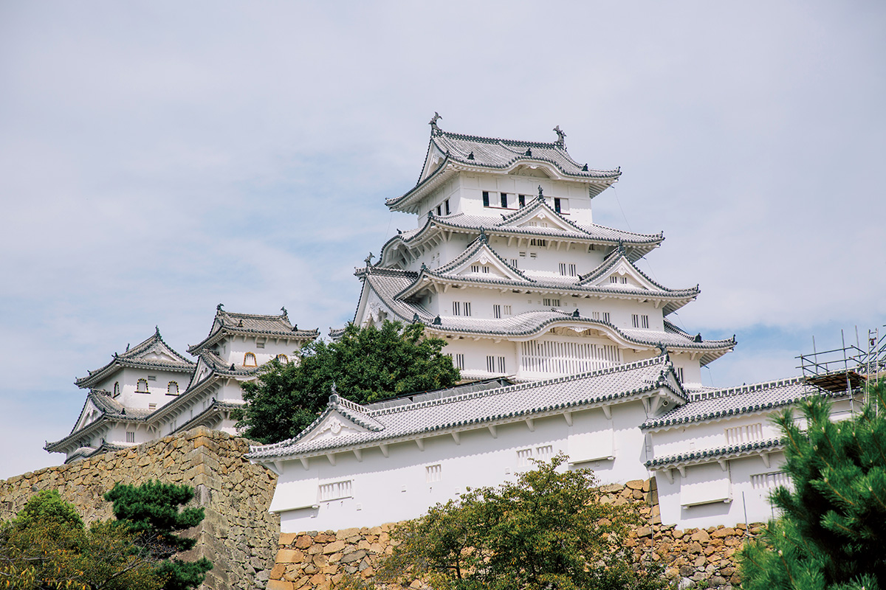
Харима, западная часть префектуры Хёго на берегу Внутреннего Японского моря, кормит себя сама: пшеница, соевый соус, рис для сакэ и рыба здесь свои. Мы проехали от Акаси до Химэдзи и дальше на запад и собрали места, куда местные ходят годами.
Харима
Край пяти рек
Великие древние цивилизации выросли на берегах Нила, Тигра и Евфрата, Инда и Хуанхэ. Кухня Харимы тоже обязана своим характером рекам: они приносят воду с гор к морю и дают людям и урожай, и знания, как им распорядиться.
Харима занимает юго-запад префектуры Хёго, ту её часть, что выходит к Внутреннему Японскому морю. Если ехать с востока, воротами в край служит Акаси, город сразу за Кобе. На западе Харима доходит до Ако на границе с префектурой Окаяма, а на севере захватывает горы. Этот пухлый треугольник прорезают пять рек, и все они впадают в залив Харима-нада. Разливы после ливней случались и здесь, но люди с древности любили эти реки и умели ими пользоваться.
Пшеница, соль и вода
Первое, что дали реки, это пшеничная культура. Речь не о хлебе. Из местной пшеницы и знаменитой соли Ако здесь делают лапшу сомэн, соевый соус и тамагояки. Продукты совсем разные, но все целиком из Харимы. На реках крутились водяные мельницы, мука выходила хорошая, и из неё научились делать самые разные вещи. Тамагояки здесь называют то, что вся Япония знает как «акаси-яки»: местное блюдо из муки и яиц. Сомэн крестьяне тянули зимой, когда в полях не было работы, а сухая погода без дождей позволяла сушить лапшу на солнце.
Особенно повезло реке Ибогаве: в её воде мало железа. Такая вода хороша для сомэн, и благодаря ей появился светлый соевый соус «усукути». Название значит «бледный вкус» и говорит о цвете, а не о солёности, и этот цвет тоже заслуга бедной железом воды. По рекам и дальше морем через пролив Акаси соус везли в большие города, Осаку, Киото и Нару, и он стал основой изысканной кухни кайсэки и монастырской кухни сёдзин.
Третье богатство Харимы это рис для сакэ. Главные поля сорта «Ямада-нисики», который пивовары ценят выше прочих, тоже здесь. Котловины между гор с их климатом и глинистая почва подходят для крупного зерна с малым содержанием белка, и в местных пивоварнях из него получается ароматное сакэ.
Море за проливом
Морские дары тоже результат особой географии. Залив Харима-нада зажат между Хонсю, Сикоку и островом Авадзи. Сильное течение из открытого моря проходит через пролив Акаси и растекается песчаными отмелями, которые называют Сиканосэ. Это важное место для морской жизни и богатые рыбные угодья: тай, морской окунь мэбару, сибас, камбала, палтус, осьминог, креветка-богомол сяко, морской угорь анаго, моллюски, водоросли и мелкая рыбка икаго. Немало рыбы до больших городов не доходит и съедается здесь же.
Если Кобе в кухне префектуры ищет изящество и новизну, то Харима доверяет своей земле и своим продуктам и бережёт то, что имеет. В этой упрямой верности есть своя глубина.
Замок Химэдзи
- Адрес
- префектура Хёго, Химэдзи, Хоммати, 68 (управление замка)
- Телефон
- +81 79-285-1146
- Часы работы
- 9:00–16:00 (с 27 апреля по 31 августа до 17:00)
- Выходные
- 29 и 30 декабря
Химэдзи
Оден, лапша и угорь у самого вокзала
Всё, о чём дальше пойдёт речь, находится в двух шагах от станций. В эти заведения ходят люди, которые любят свой край и свои продукты, и едут к ним издалека.
«Тонахати»: оден под разговор с хозяйкой
«Яйца ещё не готовы. Сухожилий не хотите? А сюмай?» Почти тридцать видов начинки ждут своей очереди в медном котле для оден, японского рагу, где всё томится в бульоне. Гости сидят за стойкой вокруг хозяйки и сами называют, что хотят, но она всегда подскажет, что как раз дошло.
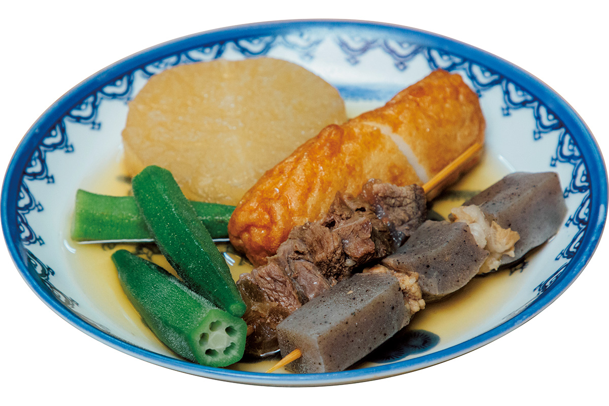
«Я слушаю, что говорит оден. И что говорите вы, тоже слушаю»
хозяйка «Тонахати»
За этим вкусом издалека приезжают даже женщины, которые путешествуют одни. Если гостья никак не решится сделать заказ, хозяйка заговорит первой: «Девушка, я вас слушаю. Водоросли вакамэ уже пробовали?» Разговор хозяйки с гостями за стойкой похож на живой концерт, и, как и оден, его можно поймать только в этот вечер.
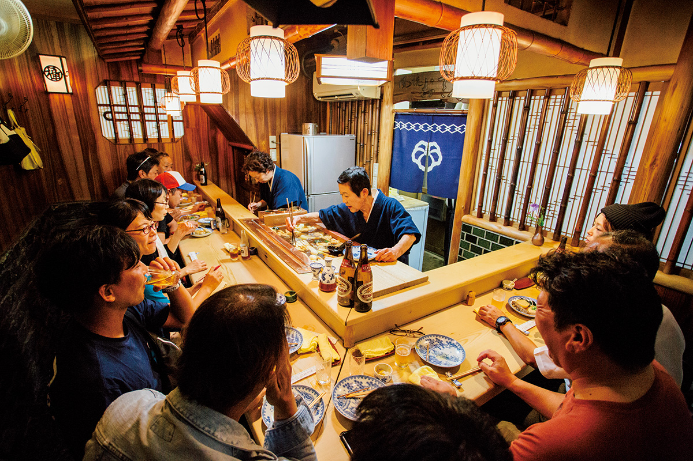
«Тонахати»
- Адрес
- префектура Хёго, Химэдзи, Гофуку-мати, 46
- Телефон
- +81 79-222-1275
- Часы работы
- 17:00–22:00
- Выходные
- воскресенье, праздничные дни
«Экисоба» от «Манэки»: больше 70 лет на перроне
Японский бульон на тунце кацуо и скумбрии и китайская пшеничная лапша с щелочной водой: сочетание необычное, и за него «экисобу» и любят. Блюдо появилось случайно в послевоенные годы, когда из-за продовольственного контроля муки было не достать. Оно оказалось вкусным, о нём заговорили, и его едят до сих пор, больше 70 лет спустя.
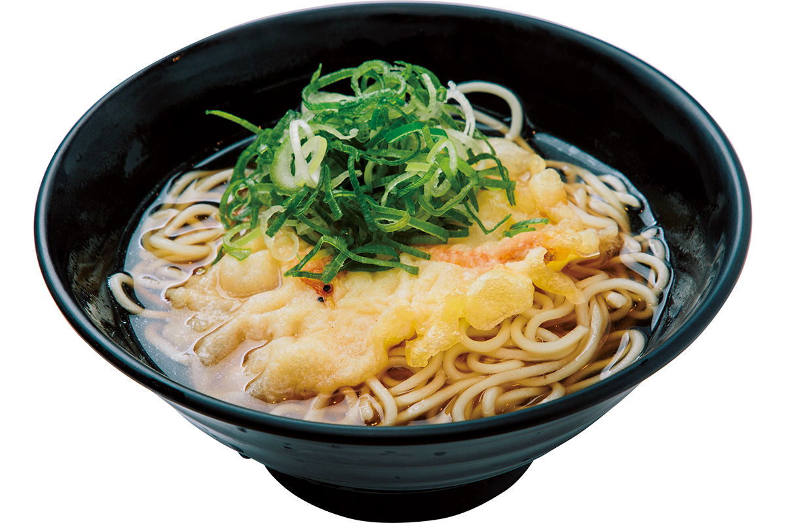
Самая популярная порция, с темпурой, расходится больше чем по 2 000 мисок в день. Тонкая лапша легко проскальзывает, а бульон сварен покрепче. Подают её за десять секунд. Стоит выйти из поезда на перрон, как запах бульона зовёт к стойке. Лавки есть на обеих платформах обычных линий станции Химэдзи. Ту, что на платформе поездов в сторону Кобе, обновили, и теперь она похожа на старый дизельный вагон. Съесть лапшу в таком вагоне особенно приятно.
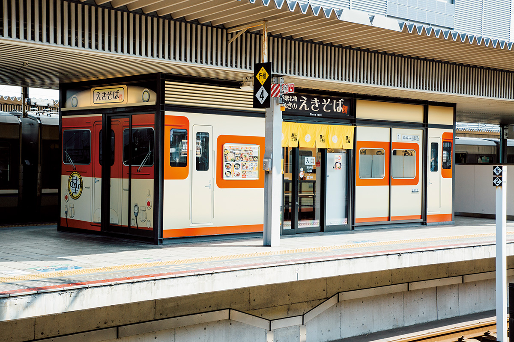
«Экисоба Манэки», лавка на платформе в сторону Кобе
- Адрес
- станция Химэдзи, линия Санъё, платформа поездов в сторону Кобе
- Телефон
- +81 79-224-0255
- Часы работы
- 6:00–23:00
- Выходные
- без выходных
- Сайт
- maneki-co.com
«Ямаёси»: угорь анаго раньше замка
По выходным очередь выстраивается ещё до открытия в 11:00. Большинство гостей приезжает из района Токио, немало иностранцев. Многие, сойдя с поезда в Химэдзи, сначала идут сюда и только потом к замку.
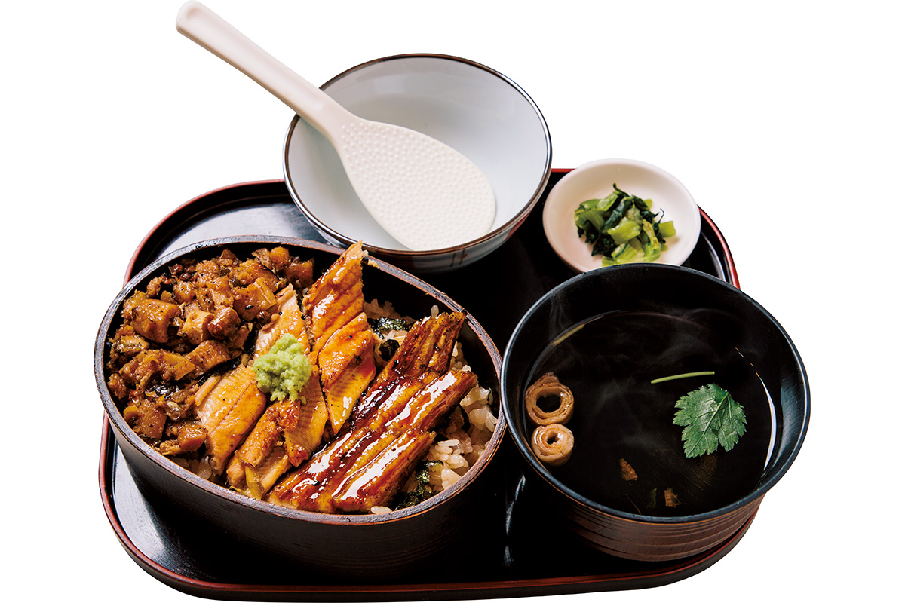
Главный герой здесь морской угорь анаго из залива Харима-нада. Его слегка обжаривают на углях, затем пропаривают и снова жарят уже под соусом. Мясо получается пышным, за это его и любят. «Анаго-мэси», угорь на рисе, едят в три приёма. Сначала пробуют как есть. Потом добавляют васаби: сладкий рис, перемешанный с домашним соусом, и угорь с острым уколом васаби заставляют тянуться за новой порцией. Под конец рис заливают бульоном с приправами и едят как отядзукэ. Вкус из сладкого становится чистым и лёгким, а аромат угря остаётся надолго.
«Ямаёси», угорь анаго на углях
- Адрес
- префектура Хёго, Химэдзи, Экимаэ-мати, 301
- Телефон
- +81 79-226-5678
- Часы работы
- 11:00–20:00 (последний заказ в 19:30)
- Выходные
- без выходных
Камигори
«Сюсуйтэй»: овощи с семейного поля
Ресторан открылся в 2012 году в перестроенном старом доме в Камигори, тихом городке на западе Харимы. Хозяин сам выращивает овощи без пестицидов, а его жена готовит из них авторские блюда. Девиз кухни: «Как можно бережнее к телу и чтобы чувствовался сезон». В каждом блюде видны любовь и вкус этой пары. Ресторан работает только по предварительной записи, и попасть сюда непросто.
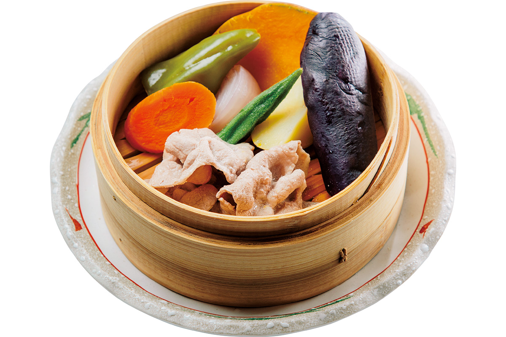
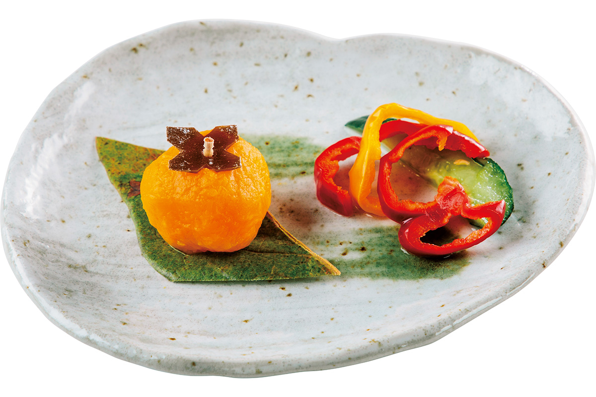
«Сюсуйтэй»
- Адрес
- префектура Хёго, уезд Ако, Камигори, Симмёдзи, 487-1
- Телефон
- +81 791-52-7008
- Часы работы
- 11:30–14:30, 17:00–20:00 (только по записи)
- Выходные
- воскресенье, понедельник
Акаси
«Сётику»: тамагояки на золотой середине
Заведению идёт седьмой десяток лет. После перестройки площади у станции Акаси оно переехало в торговый центр «Папиос Акаси». За занавеской норэн спокойный зал в японском стиле. Горячие тамагояки здесь уплетают все, от пожилых пар до старшеклассников после спортивной секции.
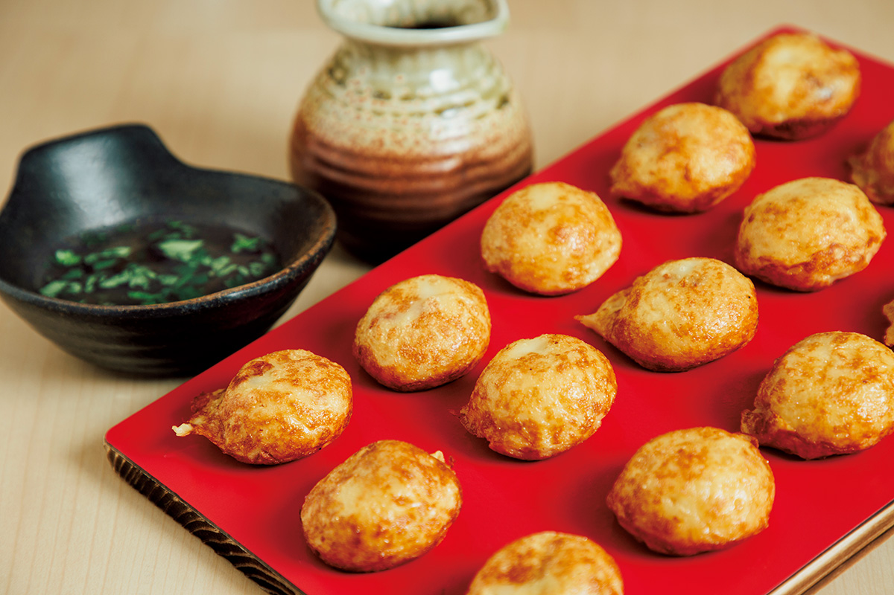
Снаружи шарики хорошо пропечены, а внутри остаются текучими и воздушными. Владелец, третий в семье, объясняет: тесто он немного подстраивает под каждую партию яиц.
«Такояки можно есть и стоя. А тамагояки, пожалуйста, ешьте сидя, не торопясь»
владелец «Сётику»
«Сётику», тамагояки
- Адрес
- префектура Хёго, Акаси, Хигаси-Наканотё, 5-23, «Акаси Токимэки Ёкотё»
- Телефон
- +81 78-912-0091
- Часы работы
- 11:00–20:00
- Выходные
- среда
Ещё в Химэдзи
Оленина и свинина
Cafe & Dinner Spoon: оленина и крафтовое пиво
Если ехать по шоссе №2 на запад, с вывески зазывает персонаж в виде рисового зёрнышка. Cafe & Dinner Spoon это заведение, где «можно наесться как следует», с упором на дичь и крафтовое пиво. Владелец познакомился с рисом, олениной и людьми, которые их производят, в районе Тамба префектуры Киото. Ему захотелось, чтобы их попробовали и в Химэдзи. Оленину здесь готовят так, чтобы раскрыть её вкус, а ещё устраивают поездки на охоту. Владелец мечтает, чтобы в Химэдзи прижилась и культура крафтового пива.
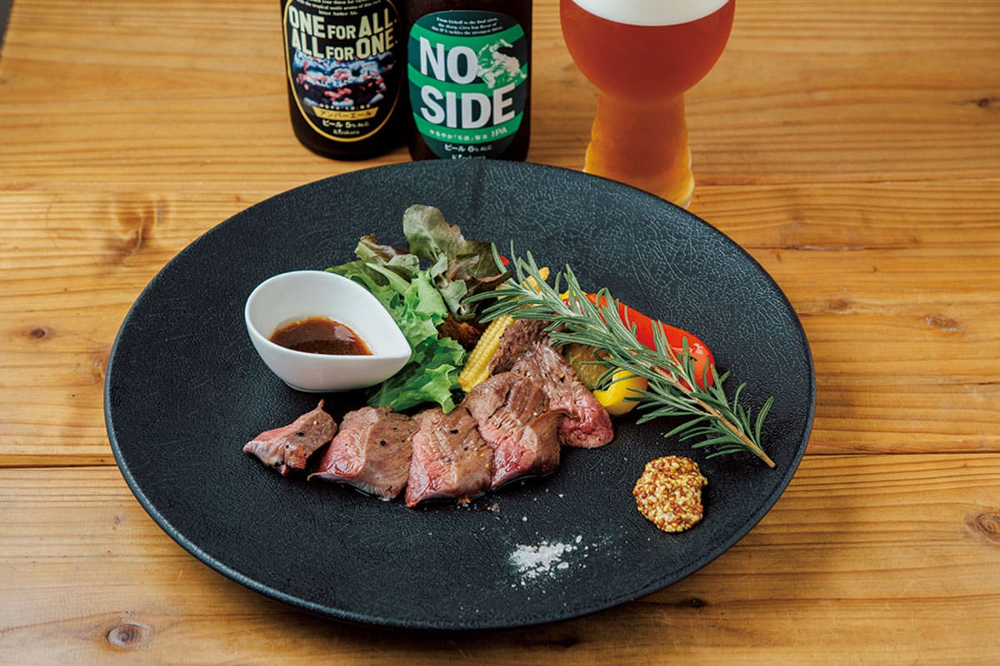
Cafe & Dinner Spoon
- Адрес
- префектура Хёго, Химэдзи, Синономэ-тё, 4-4-4, здание «Хигасикава», 1-й этаж
- Телефон
- +81 80-3782-7301
- Часы работы
- 11:30–22:00 (последний заказ в 21:00)
- Выходные
- понедельник, вторник
- Сайт
- himejispoon.com
«Сэкисин»: семейная тонкацу
Закусочная «Сэкисин» стоит в крытой торговой улице Омидзо-судзи к северу от станции Химэдзи. Когда прежний хозяин ушёл на покой, дело приняли его внук и внучка, а к ним присоединилась их мать. Главное блюдо, свиная котлета тонкацу, делается из грудинки: она мягкая, сладкая и сочная. Внучка каждый день сама нарезает мясо.
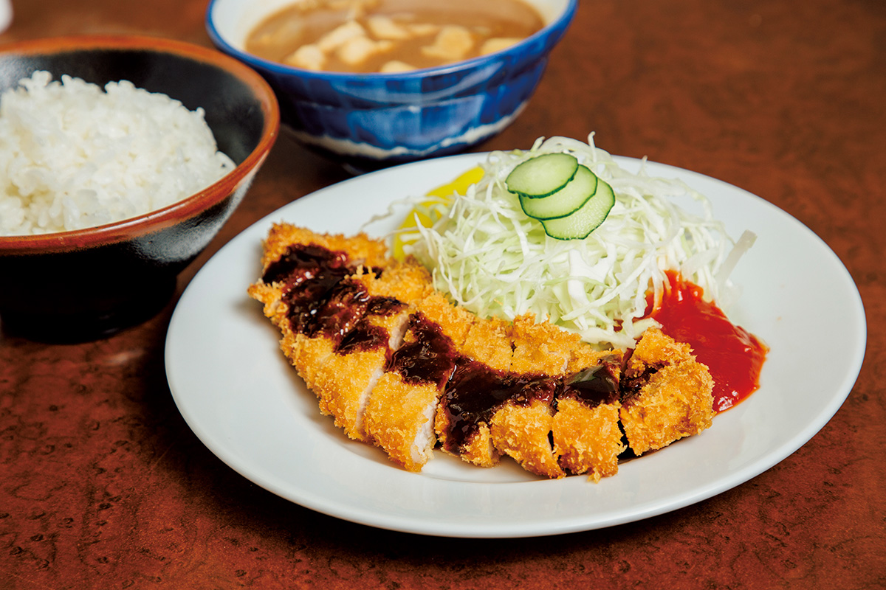
Из крупных обрезков, что остаются после нарезки, варят суп тондзиру, и каждую миску готовят только после заказа. В нём лишь лук с острова Авадзи и свинина. Простой суп согревает, а с ним и тепло и весёлость этой семьи.
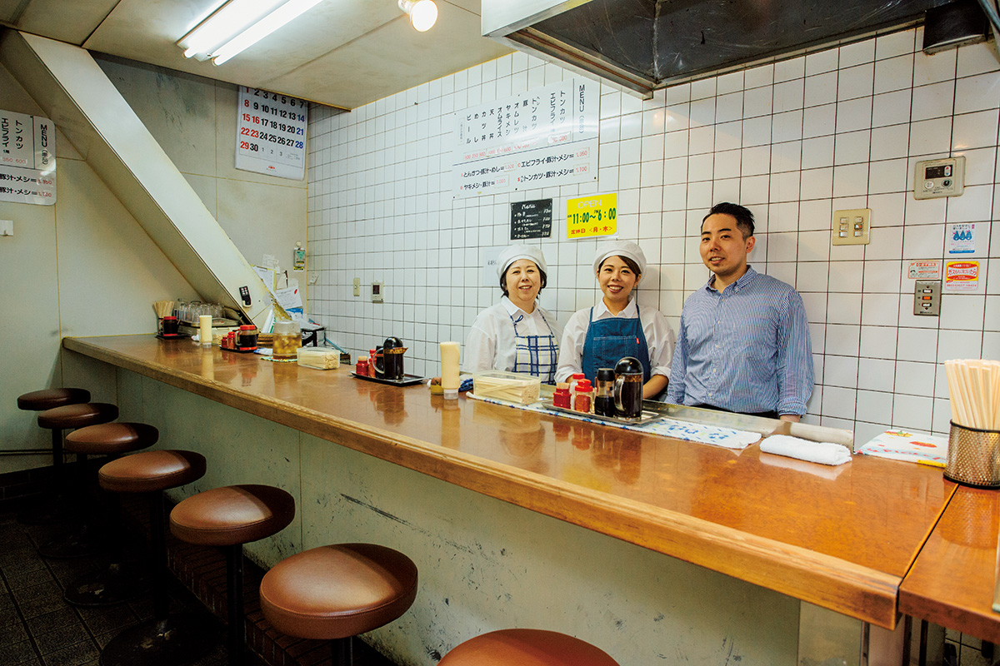
«Сэкисин», главное заведение
- Адрес
- префектура Хёго, Химэдзи, Экимаэ-мати, 301
- Телефон
- +81 79-222-3842
- Часы работы
- 11:00–18:00
- Выходные
- понедельник, четверг
Фото: Юри Ямасаки.